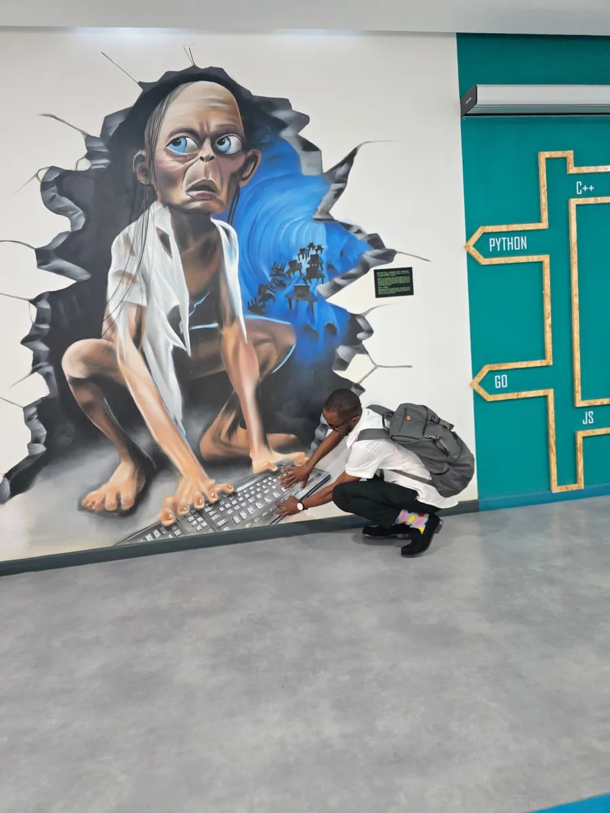
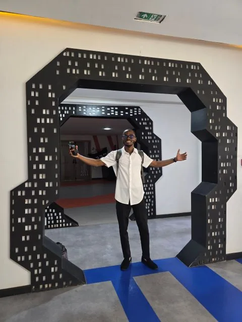
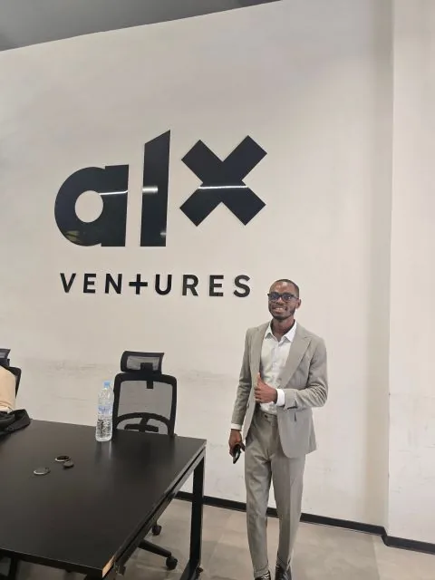

Project management
Coordination, monitoring and evaluation, due diligence and funder relations, from SIFA support work to event organisation.

Lomé, Togo
Project Manager & IT Community Manager
Executive MBA Programme Manager · Lomé Business School
I lead projects that combine innovation, digital technology, training and digital communication, working with institutions, companies and international funders, including AUDA-NEPAD and KfW.
Profile
Project Manager & IT Community Manager at Lomé Business School since January 2022, I lead training, incubation and digital transformation programmes. I am also Executive MBA Programme Manager, in partnership with Eklore Ed (France).
I coordinate digital and AI skills programmes for young people and market women traders, notably with the Golfe 2 municipality, and I provide support to the SIFA – Togo Digital Hub project (Skills Initiative for Africa, AUDA-NEPAD / KfW).
I also design the school’s visuals, flyers and communication materials, and I run its social media with a student content team. A graduate in systems and network administration from the University of Lomé, I am preparing a Master’s degree in Project Management and Digital Transformation at Université Senghor, in partnership with LBS. I teach “Digital tools & professional efficiency” in Bachelor 1 Management.
Fields of work
Coordination, monitoring and evaluation, due diligence and funder relations, from SIFA support work to event organisation.
Digital and AI skills programmes, and teaching of ChatGPT, Copilot, Gemini and Claude.
Running the school’s accounts and coordinating a student content team, with performance analysis.
Design of visuals, flyers and posters for Lomé Business School campaigns and events (Photoshop, Illustrator, Canva).
Bachelor 1 Management courses, professional training, mentoring of student teams and coaching of project holders.
Work with local authorities, companies, incubators and funders, in Togo and internationally.
Social media
Growth in the school’s social media metrics
The school’s Instagram and TikTok accounts were created and grown from scratch, end to end. In 2021, as IT & Community Manager, I designed the visuals and set up and ran the school’s accounts (Instagram, TikTok, Facebook and LinkedIn).
Since 2022, I have built and coordinated a student content team. I design the graphic materials (flyers, posters), analyse performance and adjust the strategy.
The CV reports +50 % growth in metrics over 6 months, across three dimensions tracked together: followers, engagement rate and post reach. Per-network figures are not broken down.
Design & communication
I design visuals, flyers, brochures and communication materials for Lomé Business School, and I deploy them on social media. A selection of campaigns, posters and brochure pages, in a range of styles and themes — full-bleed photography, editorial or typographic.
Career
January 2022 – present
Lomé, Togo
Lomé Business School (LBS) — also Executive MBA Programme Manager (since 2024)
January 2021 – December 2021
Lomé, Togo
Lomé Business School (LBS)
June 2020 – December 2020
Lomé, Togo
Lomé Business School (LBS)
January 2020 – May 2020
Lomé, Togo
IFAID Togo (Institut de Formation et d’Appui aux Initiatives de Développement)
Sept. 2018 – Dec. 2018
Feb. 2019 – May 2019
Lomé, Togo
Moov Africa Togo (formerly Atlantique Telecom Togo / Moov Togo)
Achievements
Support coordination for this digital training programme (Skills Initiative for Africa), of around €1.6 million, in Lomé, Kpalimé, Atakpamé, Sokodé, Kara and Dapaong.
Free training programmes for young people and market women traders.
Programme manager: student recruitment, learner follow-up and coordination of the programme with international and local professors. The 2025 cohort has 10 executives from a range of sectors.
Support for project holders: 3 projects brought to market; student teams that won Google CSquared Woézon, Le Flambeau – Smart Junior Entreprise and Togo IT Days. With KREACITY, LBS was one of the three Togolese incubators in Femmpact II, including an immersion in Morocco (Rabat, Ben Guerir and Casablanca).
LBS representative for its 4 teams at GMC Togo 2026 (national round 19 to 23 October, international final in Lagos from 11 to 13 November). Training and mentoring of the LBS team that won GMC Togo and qualified for the final in Lagos.
Co-leadership, with Tod’Aers Global Network, of six student research papers, currently being published: deepfake detection, SMS phishing, digital twins in healthcare, UI/UX, UEMOA-CEMAC integration and logistics pooling in the Sahel.
Guidance tours as part of Impact Digital (February 2023, March 2024 and May 2025). In March 2024: 15 high schools and more than 1,500 high-school students. From 12 to 17 May 2025: 5 cities (Kpalimé, Atakpamé, Sokodé, Kara and Dapaong), 18 schools and more than 2,500 high-school students.
Projects in detail
Ecosystem
Outlook

In 2025, I represented Lomé Business School and its KREACITY incubator in the Femmpact II programme in Morocco, in Rabat, Ben Guerir and Casablanca. KREACITY was one of the three Togolese incubators selected for this capacity-building programme.
The visit included discovering a dense entrepreneurial ecosystem, and exchanges with support, research and training organisations.
The photographs in this section are taken from the LinkedIn post of October 2025.



Approach
I work in a three-person department at Lomé Business School, which organises many student and community activities. The challenge is to stay coordinated, to share roles clearly and to keep up the pace throughout the year.
I trained and mentored the LBS team that won GMC Togo and qualified for the final in Lagos. I am also the school’s representative for its four student teams in this competition.
With Tod’Aers Global Network, I co-led a team of LBS students who wrote six research papers, now being published. The work is done through regular follow-up, subject by subject, through to the deliverable.
I teach “Digital tools & professional efficiency” to the four Bachelor 1 Management groups, and I have students work in particular with ChatGPT, Microsoft Copilot, Gemini and Claude. I also coach KREACITY project holders.
Whether with the Golfe 2 municipality, the SIFA funders, Eklore Ed or the companies present at INTELO and Impact Digital, I connect field needs, the school’s calendar and partners’ expectations.
On social media, I do not do everything alone: I build and lead a student production team, I design the visuals, then I review the results to adjust the line. It is team work, with a shared direction.
Know-how
Planning, coordination and follow-up, monitoring and evaluation, due diligence, relations with funders and partners, training design, event organisation.
Managing teams of young people, leadership, IT change management.
Windows Server, AD DS, DNS, GPO; virtualisation (Hyper-V, VMware Workstation/ESXi, VirtualBox); Cisco routers and switches; backup (BackupPC, System Center DPM); maintenance and technical support.
SharePoint, Teams, Admin Center; automation with Power Automate.
Social media (TikTok, Instagram, LinkedIn, Facebook, WhatsApp), content creation, graphic design (Photoshop, Illustrator, Canva), performance analysis.
Use and teaching of ChatGPT, Microsoft Copilot, Gemini and Claude, including in the course “Digital tools & professional efficiency”.
Languages — French: full proficiency · English: intermediate · Ewe: native language
Academic path
Degrees and continuing education
Certifications and distinctions
Conference and distinction
Volunteering
Recommendations
Co-founder and Marketing Manager
Managing Director
Managing Director
Cabinet SYNERGIE
Head of Monitoring & Evaluation
United Nations
Contact details available on request.
Contact
For a project, a partnership or a professional conversation, write to me, call me, or find me on LinkedIn and WhatsApp.
Lomé, Togo